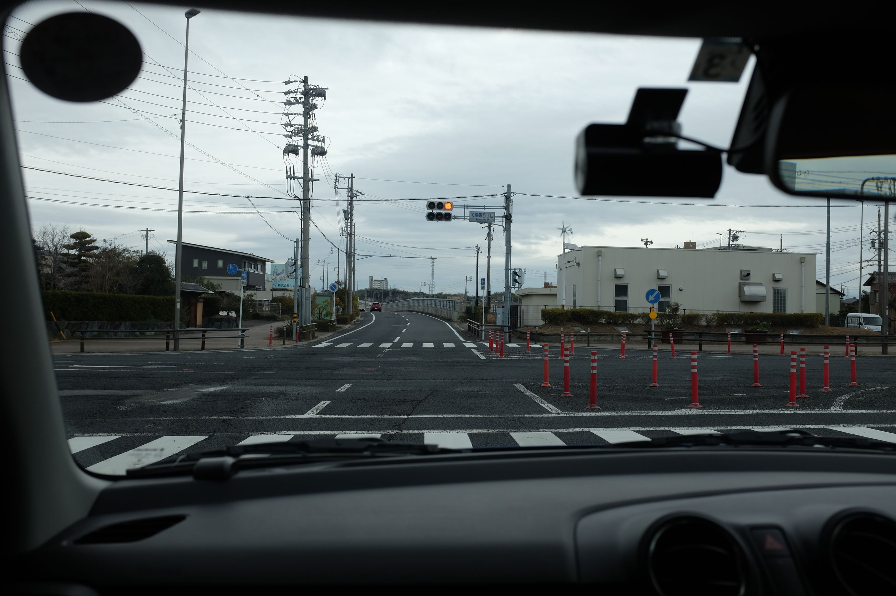
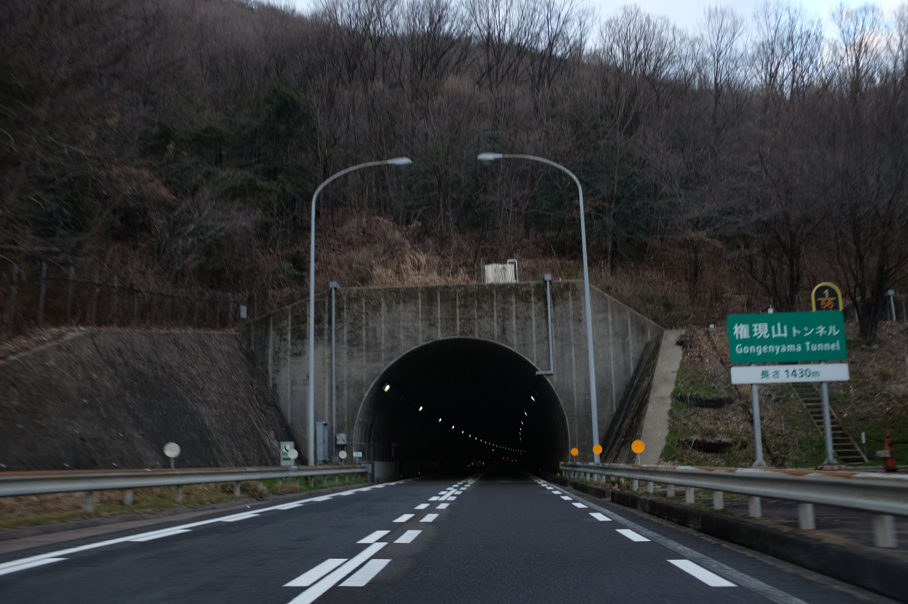
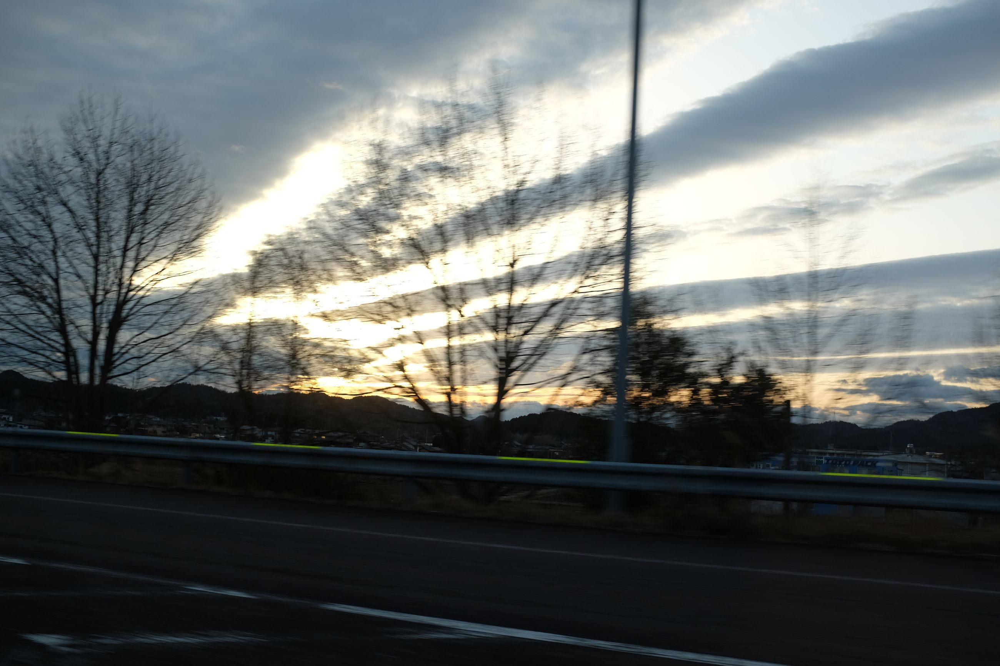
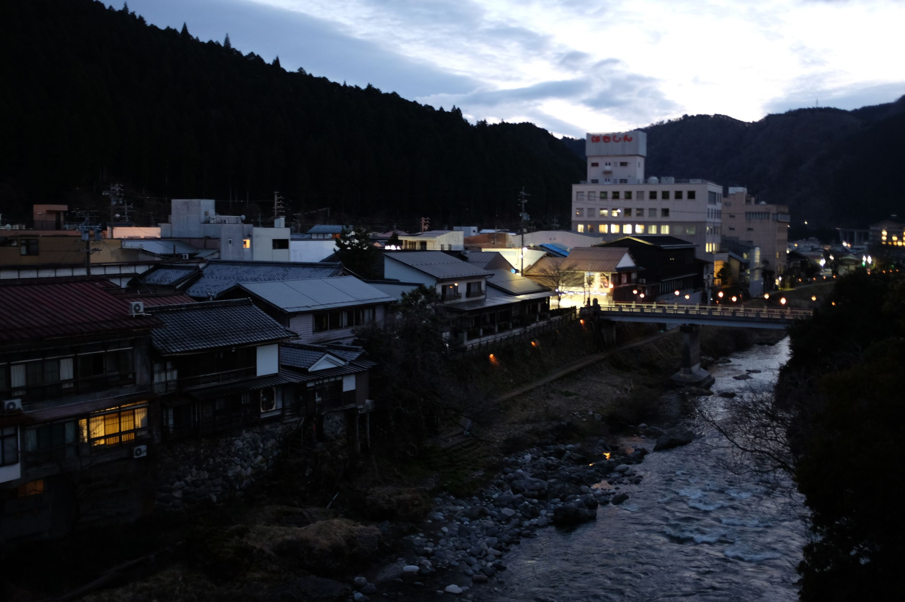
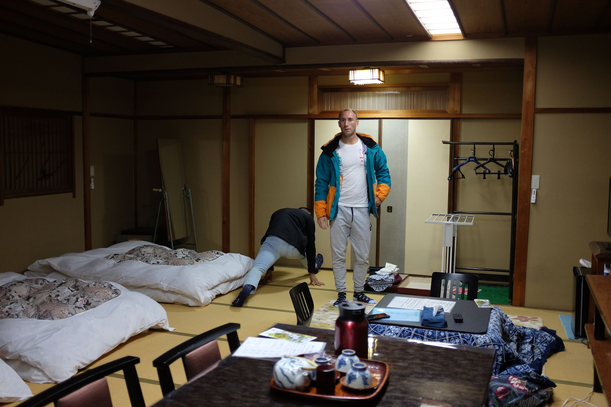
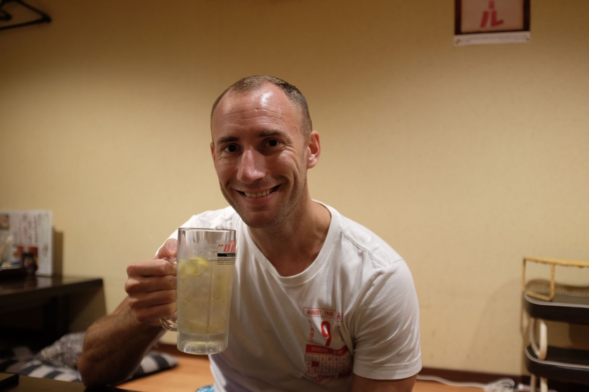
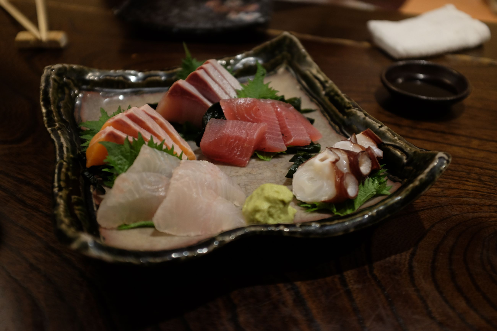
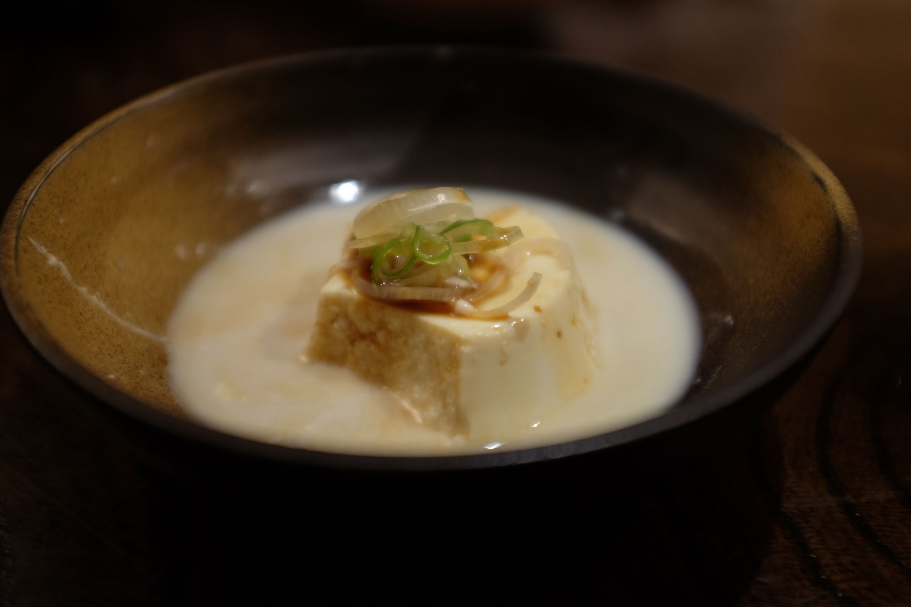

We arrive into Chubu Airport, in the outskirts of Nagoya. It is oddly like the English countryside, but I can't place it. Small, functional buildings in grey, with a random "flight park" for kids. It's that sort of industrial, concrete look that is built well, but not in any particularly special way. And the weather -- grey skies, and generally cold. Maybe that's it, the weather is very English.
Renting a car is seamless. The receptionist's English is single words, but they string together and make a coherent thought. "Damage, police, call" while he circles a number; "Damage, pay, this" while he circles another. We get it in 15 minutes.
The drive up to Gifu (roughly 1.5 hours) reminds me of two things. The drive in the beginning is similar to the airport -- English. At the pit stop, there is a small parking lot with small cars, with the odd selection of shops. We stop in at a bakery and grab a few pieces of bread. I've been trying to learn Japanese for a few months, and manage to read a few tags. It's Japanese phonetic spellings of English words. The second is the outskirts of Taipei when driving in from Taoyuan airport. A sprawl of a city with the standard square buildings in a mahogany colour. As we get closer to our desination, we enter the mountains, and the tunnels have a strange resemblance to those in Taiwan.
  
The town Gujo Hachiman is small. By the time we get in, it already feels asleep, with very few people on the streets. We are staying at Miharaya Ryokan, which is a small, traditional house with a view of the river from the window. It feels and looks just out of a Miyazaki cartoon. Walking down the street, we tuck into a small restaurant for a delicious dinner of tempura, handmade tofu, sashimi, and tororo rice (a yam paste rice). We wash it down with some Highball. Afterwards, we walk 1.5 kilometers to a Lawson for some groceries before walking back. We see no one on the street, except for a few cars passing by. It really is a small town, and the silence is calming and eerie. There seem to be many people tucked into the restaurants, though. Where do they come from?
    